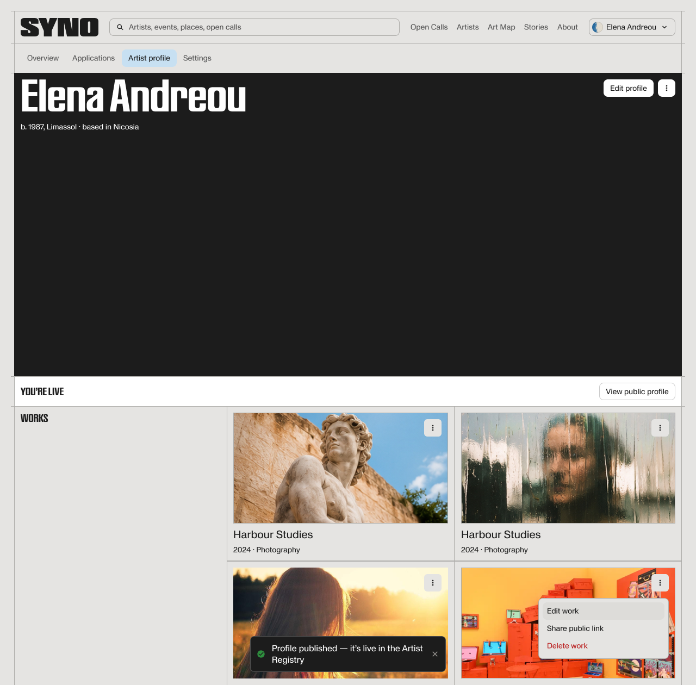
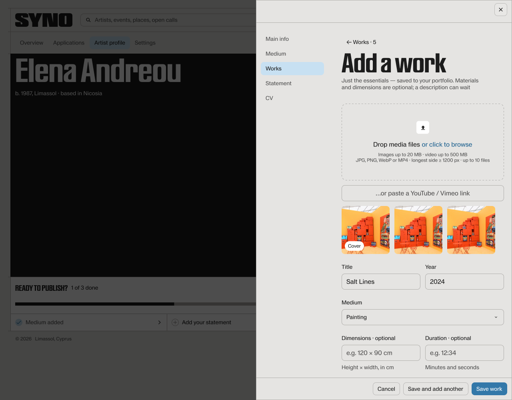
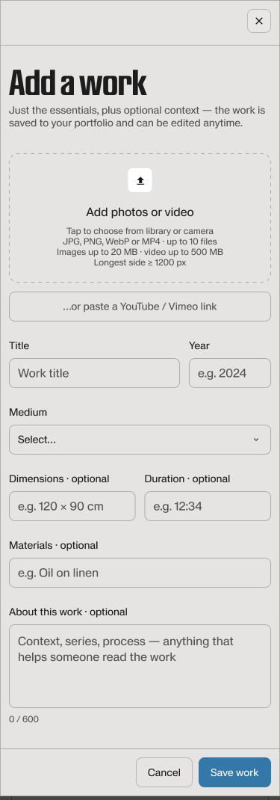
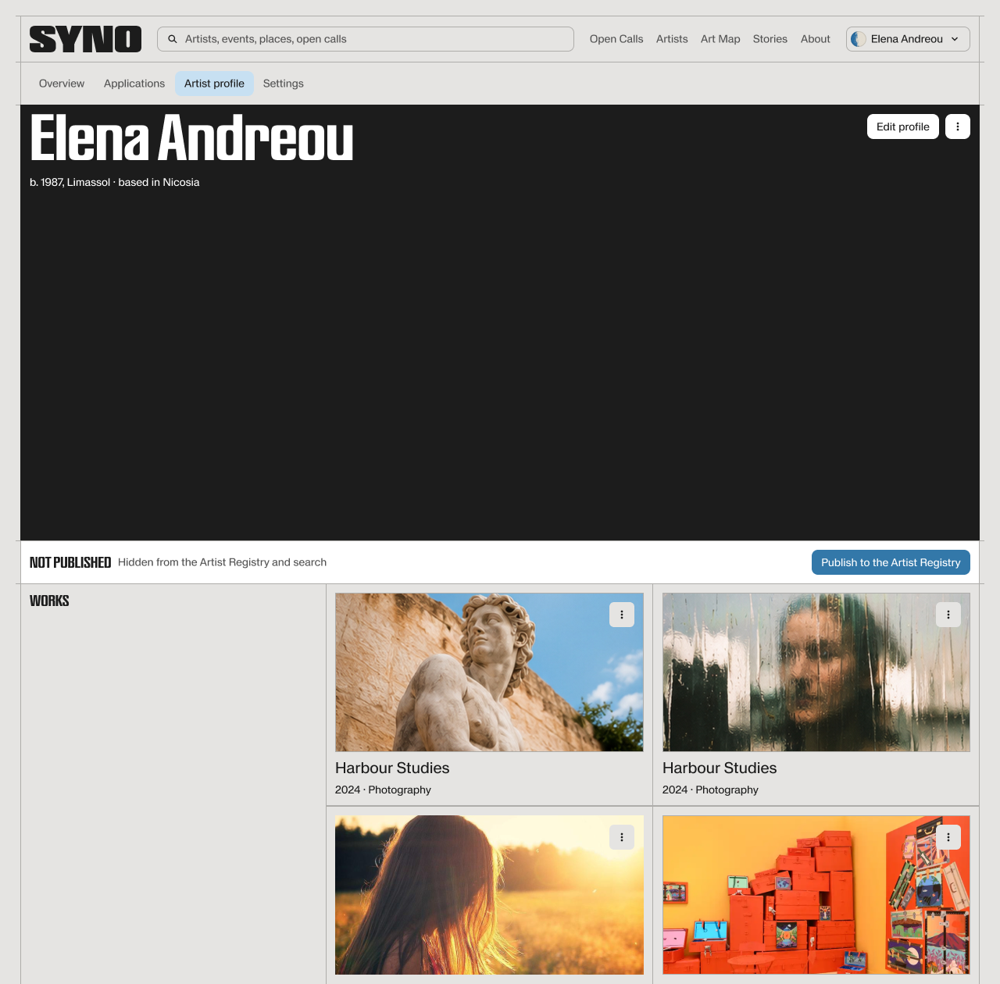
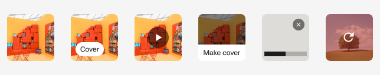
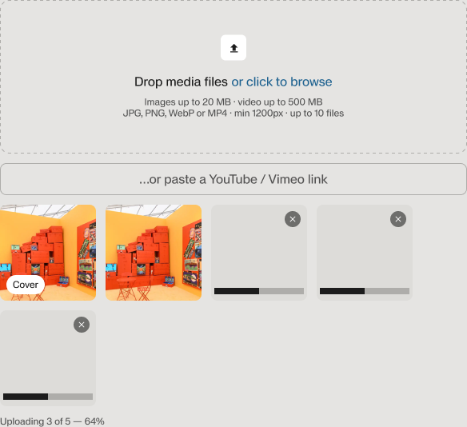

Syno · Product design · 2026 · Публичная версия запущена
Syno: арт-платформа с нуля
Syno — арт-платформа Кипра: здесь находят и публикуют события, представляют работы и подают заявки на опенкол. Я определяла, как связать эти сценарии: проектировала функционал и UX/UI всех разделов, собрала кодовый прототип и сопровождала разработку.
Айдентика и визуальная концепция — Vanya Annenkov. Логотип и визуальный язык стали основой моей работы над интерфейсами.
- Для посетителя
- Save не теряется после входа
- Для художника
- Одно портфолио для профиля и заявки
- Для автора событий
- Публикация сразу или через проверку
Задача
На старте были идея платформы и ТЗ с отдельно описанными разделами. Один человек мог быть посетителем, художником и представителем площадки; нужно было связать данные, роли и правила между этими сценариями.
Мой вклад
Продуктовые сценарии и правила, структура разделов, UX/UI и адаптив, система компонентов на основе айдентики, спецификации и дизайн-ревью. Финальную версию собирала команда разработки.
Макеты созданы в Figma; сценарии я проверяла в кодовом прототипе. Публичные страницы доступны на syno.art, кабинеты показаны по макетам и прототипу. Демо-профили вымышлены. Авторы и источники изображений.
1. От события к художнику
Я связала карту, события и портфолио в один маршрут: выбрать выставку, проверить время и место, перейти к работам участника. Событие открывается поверх карты, сохраняя фильтры и контекст поиска.
Один статус на карточке — по времени Кипра
Для статуса события я задала 12 правил приоритета. Срочные метки «Today» и «Opening tonight» вытесняют общие, а время считается по Кипру. «Closing soon» появляется только в последнюю неделю выставки длиной от двух недель. От «Closes in 30 min» я отказалась: такая метка быстро устаревает.
Публичные страницы платформы
Главная знакомит с программой платформы, Artists открывает реестр, Stories связывает редакционные материалы с художниками и событиями.
2. Портфолио под контролем художника
Портфолио публикует сам художник, без отбора. Отбор относится только к заявке на опенкол — отдельному действию со своими правилами.
Работы сохраняют свои пропорции
В раннем макете горизонтальные работы обрезались до вертикального кадра. Я убрала единый кроп: изображения сохраняют исходные пропорции, а высоту ряда задаёт самая высокая работа.
Редактор работ и загрузка медиа
Изображения, видео и сведения объединяются в работу. Загрузка, ошибка и повторная попытка видны у конкретного файла.



Готовность не означает публикацию
Для публикации нужны направления работы, Statement и хотя бы одна работа. Фото, обложка и CV необязательны. Чеклист показывает недостающее, но готовую страницу открывает сам художник. Unpublish скрывает профиль, сохраняя содержимое для дальнейшей работы.

3. Одна подача для нового и действующего художника
Новый художник и автор с готовым портфолио проходят четыре общих шага: сведения, работы, вопросы и проверка. Готовые материалы используются в заявке, недостающее можно добавить по пути.
Отправленная заявка — отдельная копия
Заявка берёт Statement и работы из профиля, а при отправке фиксирует их копии вместе с ответами. Дальнейшие правки портфолио не меняют материалы жюри. От второго синхронизируемого Statement я отказалась: после первой правки было бы неясно, какой текст считать актуальным.
Страница опенкола и заявки в кабинете
Заявку можно сохранить и продолжить позже. В кабинете виден статус рассмотрения, а для пропущенного дедлайна предусмотрено отдельное состояние.


4. События: сразу или через проверку
Правила публикации зависят от автора: организация публикует событие сразу, личную публикацию проверяет Syno. Поэтому автор выбирается до формы и остаётся закреплённым при заполнении. Место проведения выбирается отдельно и не даёт доступа к странице площадки.
Если личное событие требует доработки, статус Changes requested возвращает автора к заполненной форме через Fix and resend. Расписание зависит от типа события: у встречи один сеанс, у выставки — период с днями и часами посещения.
Кабинет организации и доступ команды
Представитель создаёт страницу площадки или получает доступ к существующей, приглашает команду и ведёт события. Кабинет поддерживает актуальные сведения, которые посетитель видит на карте.

Что пересмотрела по ходу работы
Два аккаунта → один
Художнику и представителю площадки не нужны разные входы. Один человек может работать с личным профилем и несколькими организациями.
Запрос → приглашение
Доступ к странице площадки даётся по приглашению. Это убрало очередь чужих запросов, проверки и отказы.
On view now → позже
Метку текущих выставок в профиле художника отложили: для неё нужны надёжные связи с событиями. Без них обещание в интерфейсе было бы неточным.
Общие компоненты и правила
Загрузчик и плитка файла используются в портфолио, заявке, событии и на странице площадки. Я предусмотрела состояния каждого файла — загрузку, ошибку с повтором и выбор обложки, — чтобы действие и проблема оставались рядом с конкретным изображением.


Мобильная версия
Карта и список показаны в первом маршруте. В кабинете редактор занимает весь экран с вкладками сверху, а действия заявки закреплены внизу.


Результат
Из отдельно описанных разделов получилась общая модель: один аккаунт связывает роли, портфолио служит и публичной страницей, и основой заявки, а правила публикации события зависят от автора.
Публичная версия запущена: доступны главная, Art Map и страница опенкола. Сценарии кабинетов в кейсе показаны по макетам и прототипу.
Я передала команде макеты, компоненты и спецификации, а затем сверяла готовую сборку с проектом на дизайн-ревью.